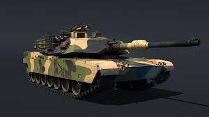
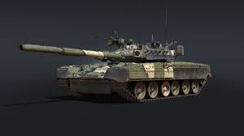
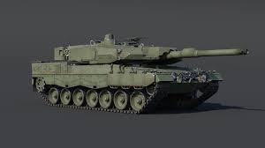
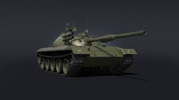
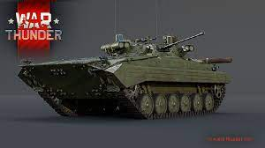
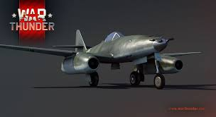
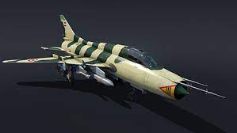

M-901: American ATGM carrier developed on the basis of the M113 armored personnel carrier in December 1976. It was designed to compete with Soviet ATGM carriers based on the BRDM-2.

A-4E Skyhawk: American light carrier-based attack aircraft, developed in the first half of the 1950s by Douglas Aircraft Company. Serially produced until 1979, was in service with many countries of the world. It was widely used in the Vietnam War, the Arab-Israeli wars and other armed conflicts.

M1 Abrams: U.S. main battle tank, mass-produced since 1980. It is in service with the US Army and Marine Corps, as well as the armed forces of Egypt, Australia, Morocco and a number of Middle Eastern states. Named after General Creighton Abrams. M1 "Abrams" is currently one of the heaviest tanks, its combat weight exceeded 62 tons. It laid the foundation for the use of a number of innovative solutions, including a computer fire control system and separate storage of ammunition using knockout panels.

T80uk: command version of the T-80U. Adopted in the early 1990s. Installed: Shtora-1 system, Agava-2 thermal imager, new atmospheric parameter sensor, R-163U and R-163K radio stations, TNA-4 navigation system, HE shell remote detonation system, AB-1-P28 autonomous power plant.

Leopard 2a6: German MBT, which is a modernization of the Leopard 2A5 tank. During the modernization, a new elongated 120-mm Rheinmetall L / 55 gun was installed. Due to the increase in the length of the barrel, the penetrating power of the gun increased. Also, compared to the previous Leopard, a new DM53 shell appeared in the ammunition nomenclature.

122-TM: During the Soviet-Chinese border conflict in 1969, the Chinese captured a modern Soviet T-62 tank, which had a significant impact on the development of project 122. In the fall of 1970, two prototypes of the vehicle were created, which differed in additional weapons: four ATGMs were installed on the sides of the tower, on the gunner's hatch was a twin installation of DShK machine guns. Tests that took place in 1971-1973 showed the unreliability of the design, after which work on the project was stopped in 1974.

Bmp-2: Soviet and Russian tracked infantry fighting vehicle designed to transport personnel to the front line, increase their mobility, armament and protection on the battlefield in the conditions of the use of nuclear weapons and joint actions with tanks in battle.

Me-262: German zero-generation subsonic turbojet fighter, bomber and reconnaissance aircraft of the Second World War. It is the world's first serial turbojet aircraft and the world's first turbojet aircraft to participate in hostilities.

Su-22: After completion of the tests, the machine was exported in 1976-1980 under the name Su-22 (serial factory designation S-32M2K). This modification contributed to the standardization of the fleet of front-line aircraft supplied from the USSR to foreign consumers (R-29B-300 engines were installed on MiG-23 modifications).